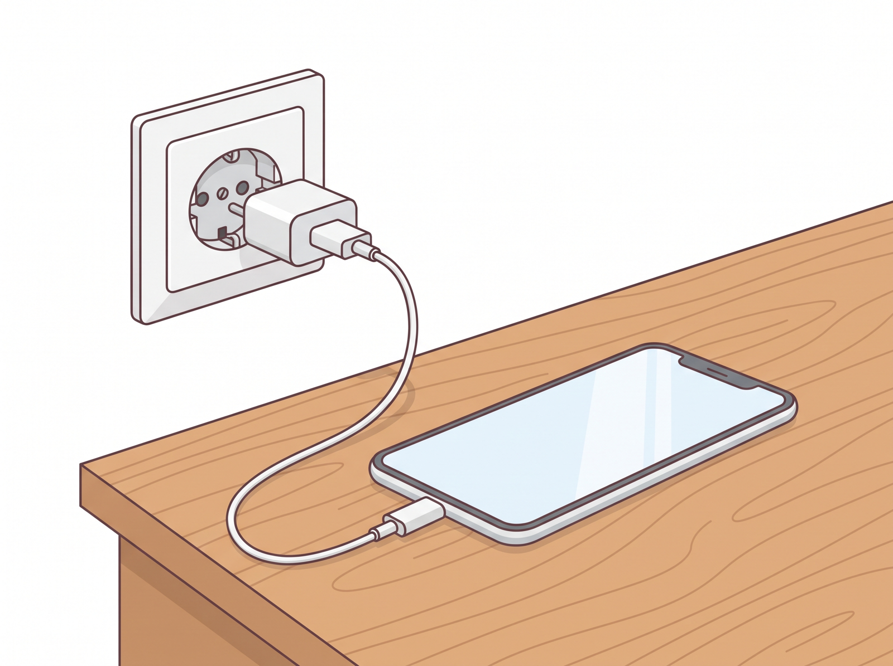
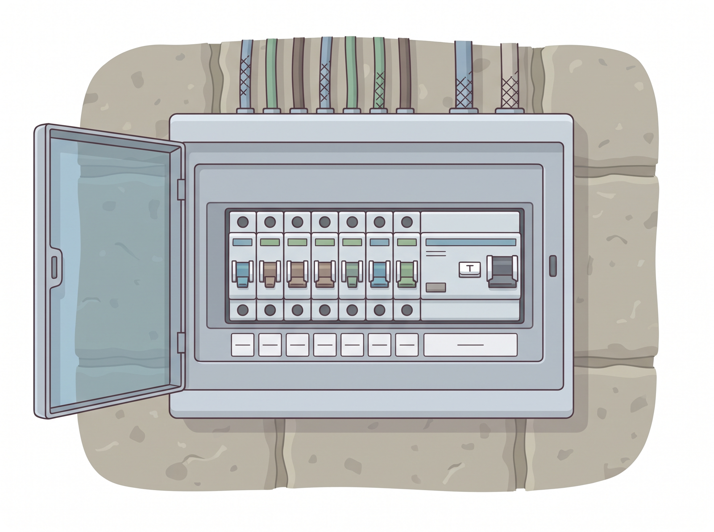
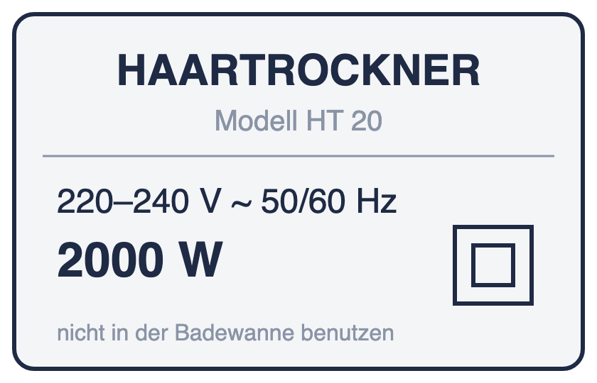

Elektrizitätslehre · Klasse 8
In dieser Einheit klären wir, was Strom ist, warum er fließt, wie man ihn misst – und warum er gefährlich sein kann. Am Ende erklärst du diese drei Bilder mit Fachwörtern.
 Steckdose mit Ladegerät |  Sicherungskasten im Keller |  Typenschild eines Föhns |
✎ allein · mit dem Stift auf dieser Seite
Kreise ein, was du noch nicht erklären kannst. Schreib eine Frage auf, die du in dieser Einheit beantwortet haben möchtest.
Meine Frage:
________________________________________________
________________________________________________
✎ allein · zu Beginn der 3. Stunde · auf dem iPad (ca. 8 min)
Mach den Check-in. Er zeigt dir, was du aus früheren Einheiten schon sicher kannst. Am Ende siehst du eine Übersicht – mach davon einen Screenshot und füge ihn hier ein.
Screenshot: Übersicht Check-in |
Einige Illustrationen in dieser Einheit wurden mit KI erstellt.